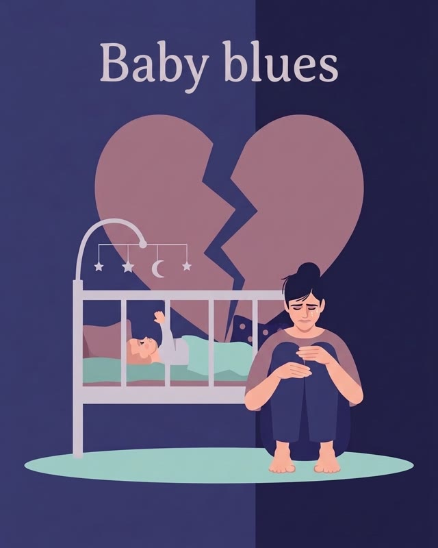
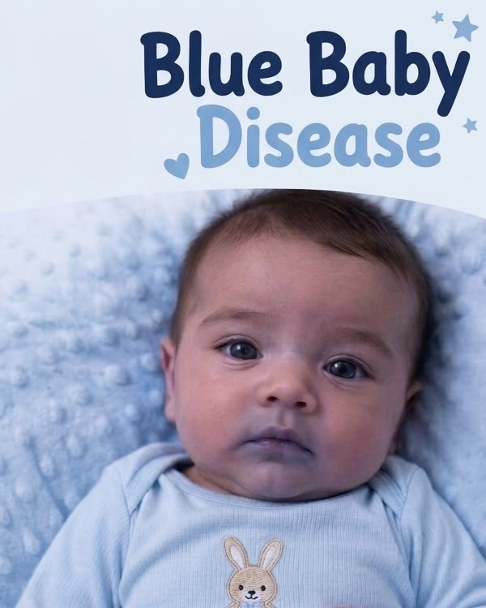

Follow one query — “baby blues” — through all five.
Matching words isn’t matching meaning.


Illustrations for demonstration only
Every step sounds plausible. The endpoint is wrong.
ICD-10-CM F53.7Scale versus verified depth.
Right knowledge, wrong reasoning. Clinical logic is dense — when AI can’t hold it, it shortcuts.
Swipe to see the whole tree →
✓ met✗ not metshortcut: one matching branch taken as the whole compound rule
Bidirectional grounding — reasoning built in, not patched on. Designing systems where clinical knowledge and AI inform each other continuously — not as a pipeline, but as a layered architecture.
↻ One loop, not a pipeline — any step can send work back.
‘RAG is dead’ — store-and-retrieve was never enough. Even knowledge graphs, Gartner’s fastest-rising context layer, are one layer of three. Clinical logic has to be proven, not looked up.
In practice: AMIA 2025 poster →The tension persists:
Verifying at scale against an explosion of clinical and AI-generated knowledge demands more than an LLM or symbolic reasoning can do alone.
In practice: AMIA 2025 podium talk →Every answer traced to its context and intent.
Explainability, taken to its visual form.
Experts move from open-ended investigation to focused hypotheses.
In art and in AI, the same question applies. I wrote a song, made a music video, and brought a dancing robot to an elementary school festival to ask it.
I made this song and music video — and played it at an elementary school festival where kids tried the guessing game above. ▶ Press play the music video and try the guessing game yourself!
If you have guessed correctly, a real robot would dance to the song — showing kids how AI, music, and robotics connect.
Whether you're working on clinical AI, exploring how knowledge representation can improve LLM reliability, or just curious about this space — I'm always happy to connect and exchange ideas.